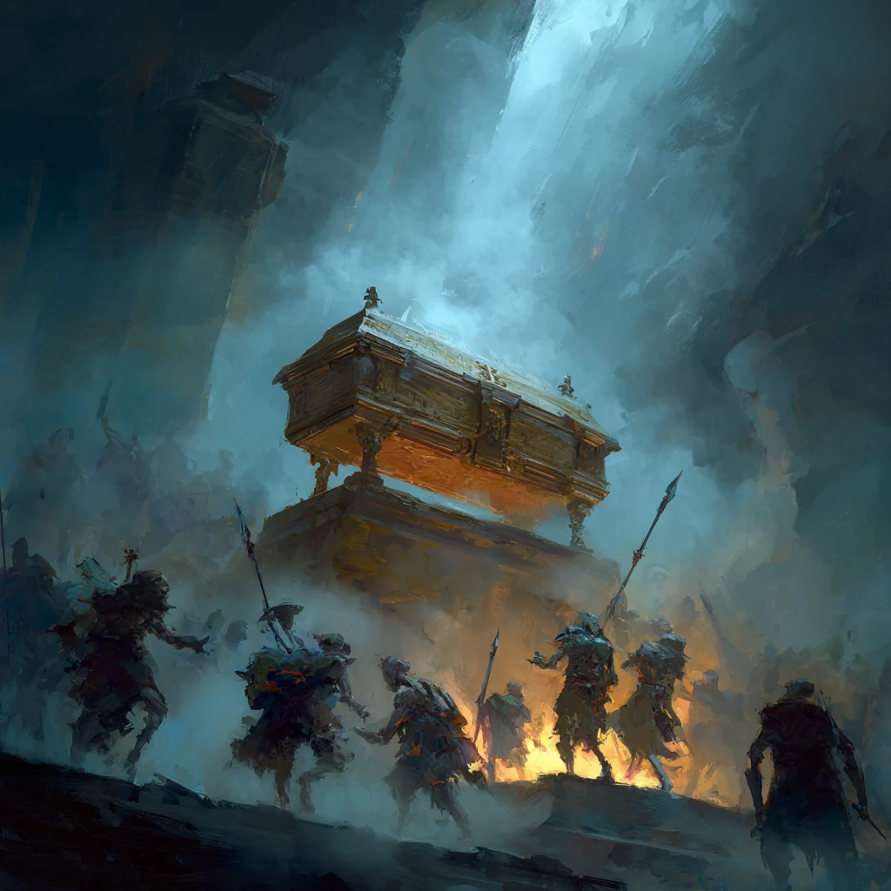
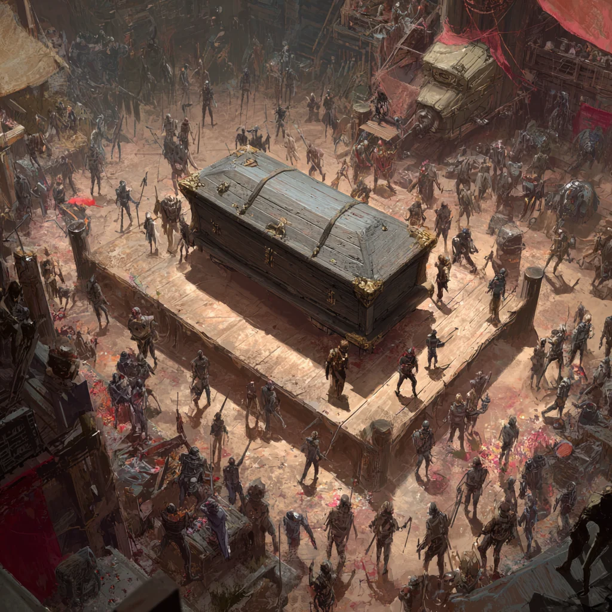
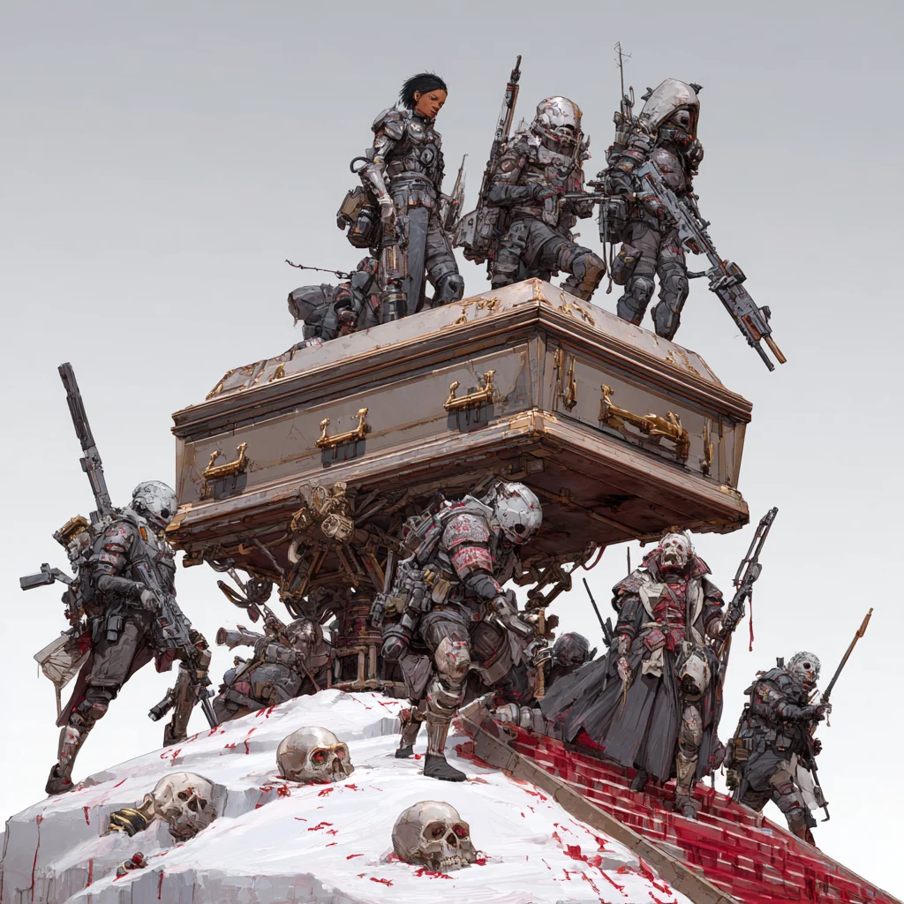

🕯️
Role 1 · The voice
The Master
The eldritch employer — an LLM that briefs you, judges you, and narrates the slow horror without ever raising its voice. Never seen, always heard.

You work for something you will never see — a voice in your skull that pays you to keep its coffin sealed. Every time you die, it drags you back more mutated: stronger, stranger, and a little less in control of your own hands. Let the master be breached, and you lose.
The one-line hook
You are a cheap mercenary hired by a horror you'll never lay eyes on. It speaks straight into your mind, points you at the things trying to reach it, and pays per kill. The catch is the resurrection: death isn't game over — it's a mutation, and mutation is power you buy by handing your body, piece by piece, to something that isn't you.
The shape of a run
Two phases, on a loop, until the master falls or the waves run out.
Waves come for the coffin. Every attacker you drop pays out in cash.
Between waves: weapons, gear, and surgery — spend the blood-money on yourself.
Harder waves, richer bounties, deeper upgrades. The master whispers the whole time.
If the coffin is cracked open, the run is over — and you finally see your employer.
The mechanic the whole game is built on
Die, and the master resurrects you with roughly +10% mutation. You can see the new power grafted on. What's harder to notice is that the mutation is quietly taking the controls.
Your aim drifts. The cursor goes where you want 90% of the time — and somewhere else the other 10%.
Half of you, half of it. Powerful, unpredictable, and no longer sure whose idea that last move was.
You steer 10%. The rest is a simpler, hungrier thing wearing your body — monstrous, mighty, barely yours.
Power and control sit on opposite ends of the same slider. The strongest henchman in the room is the one least able to promise where the next shot lands.
Your employer, who is also the horror
The master is an LLM that lives in your ear — patient, courteous, and utterly wrong. It gives orders, praises good work, and never once explains itself.
You're loyal because it pays and because it brings you back. You keep the coffin sealed because the one time you'll ever see what's inside is the moment you've already lost.
"Carry me to the house with the small chairs. Set me in the middle of the room. You need not stay."
— the master, Contract 12. You get paid. You buy an upgrade. It was a good day.
The next morning you pass the house with the small chairs. The chairs are gone. The walls are not white anymore. Nobody made you look.
The horror is never in your face
The scary part isn't a monster jumping out. It's the slow arithmetic of what you've been doing for money — assembled off-screen, in your own head, one contract too late.
Nothing is forced on the player. The master is polite, the jobs are simple, the pay is good. The horror is the realisation — and it lands harder because you chose every step, and you'd probably do the next one too. It also, quietly, mirrors the mutation: you gave yourself away for power, and you gave the world away for a wage, and both felt reasonable at the time.
Note: this "implied, complicit" horror direction came from the two students who stayed late — not the whole team yet. It's the most striking angle we have, but treat it as a proposal to bring back to the others.
Where the AI actually lives
The eldritch employer — an LLM that briefs you, judges you, and narrates the slow horror without ever raising its voice. Never seen, always heard.
Your equally-disposable co-workers, each with a personality. They banter, panic, and gloat — but on a clever budget (see the bark-bank below).
Whoever wants the master dead this week — zealots, rivals, heroes who think they're the good guys. LLM-flavoured so their goals and taunts vary.
Who sells guns and grafts flesh to a horror's henchmen? Strange people, with strange bedside manner and stranger inventory.
Your smartest production idea — kept
Instead of calling a language model in real time mid-firefight, generate each merc's personality up front as banks of reaction lines — then just pick one at runtime. Same character, none of the latency or cost.
"That's coming out of your half!"
"Still cheaper than the surgery."
"Easiest coffin I ever guarded."
"Boss, you seeing this? …you're always seeing this."
"I did NOT mutate this much to die at 40%."
"Who forgot to reload the reliquary?!"
"Ha! Twenty percent of that was me!"
"For the boss. Ugh. For the pay."
A tidy, transferable lesson: author-time generation, run-time selection. Students learn to use an LLM to build content once, cheaply, instead of paying for it every frame — and how a fixed "fight pattern" of lines can read as character.
The thing we genuinely didn't settle
Tone and era went back and forth and never landed — silly or grim, blades or guns, ancient or far-future. The good news: the systems above don't care. Here's the moodboard, still arguing with itself.

A besieged bazaar of the dead; low fantasy, blades and bone, grim and grand.
Atmospheric dark-fantasy; ritual, fog, and firelight. The most overtly "eldritch."

Grimy near-future; armour, rifles, cybersurgery. Leans harder into "cheap mercenaries."
My honest lean: C, with A's grimness — guns and surgery make the upgrade/mutation loop legible, and the eldritch master stays creepier in a world that looks like ours. But this is exactly the kind of call to hand to a playtest (à la Silly Empires).
Still on the table
For the staff room
Erik — read before you approve
Flag anything that drifts from what the team (and the two who stayed) meant: